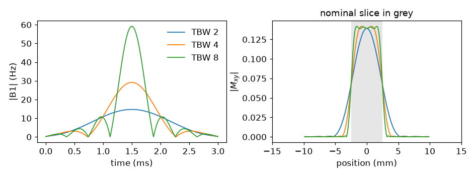
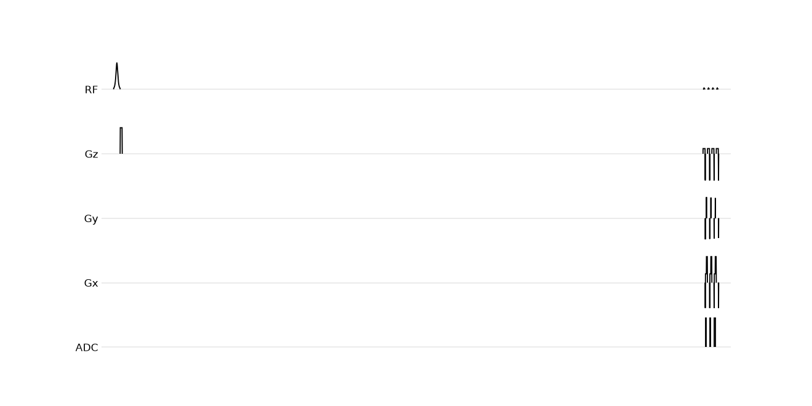
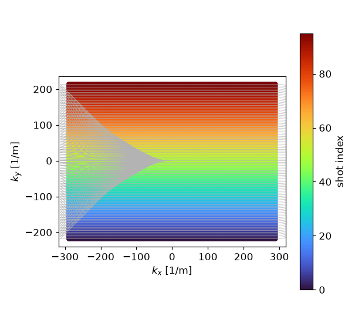

Note
Go to the end to download the full example code.
Excitation, preparation, readout#
Assembling an inversion-prepared gradient echo from sequence modules rather than from individual events.
A SequenceModule solves the timing and the
gradient waveforms of one group of blocks at construction and publishes the
resulting events under names the scan loop addresses them by. The loop chooses
the views, scales the encoding events and adds the blocks; nothing about the
sampling order is fixed by the module.
import numpy as np
import pypulseqpp as pp
from pypulseqpp import sequences
system = pp.Opts(
max_grad=32.0,
grad_unit="mT/m",
max_slew=130.0,
slew_unit="T/m/s",
adc_dead_time=10e-6,
)
FOV = (220e-3, 220e-3)
MATRIX = (128, 96)
SLICE_THICKNESS = 5e-3
Excitation#
SpatialSelectiveExcitation designs an SLR
pulse for the requested flip angle, thickness and time-bandwidth product,
together with the selection gradient and the rephaser that unwinds its second
half. Its selection_amplitude is the plateau of the selection lobe, which
a slice offset is converted against: freq_offset = selection_amplitude *
position.
excitation = sequences.SpatialSelectiveExcitation(
system,
flip_angle_deg=8.0,
thickness_m=SLICE_THICKNESS,
duration_s=3e-3,
time_bw_product=4.0,
)
print(f"{len(excitation.blocks)} blocks, {excitation.duration * 1e3:.2f} ms")
print(f"selection amplitude {excitation.selection_amplitude * 1e-3:.1f} kHz/m")
2 blocks, 3.68 ms
selection amplitude 266.7 kHz/m
The time-bandwidth product trades profile sharpness against pulse duration at
a fixed slice thickness. sim_rf()
simulates the Bloch response of the module’s own pulse across off-resonance,
which for a selective pulse is the slice profile.

<Figure size 946x352 with 2 Axes>
Readout#
LineReadout2D takes the excitation’s pulse and
gradients and solves the rest of the repetition around them: the prewinder,
the phase-encode template at its largest step, the acquisition window and the
spoiler. The pulse is where TE is measured from, and the rephaser is placed
in an interval the repetition already has to wait out. te=None asks for
the shortest echo time the readout admits, which the module reports as
echo_time.
readout = sequences.LineReadout2D(
system,
excitation.rf,
excitation.gz,
excitation.gz_reph,
fov=FOV,
matrix=MATRIX,
te=None,
spoiling_cycles=4.0,
voxel_size_m=FOV[0] / MATRIX[0],
)
print(f"TE {readout.echo_time * 1e3:.2f} ms over {readout.duration * 1e3:.2f} ms")
print(f"receiver bandwidth {readout.bandwidth_hz * 1e-3:.0f} kHz")
print(f"published events: {', '.join(sorted(vars(readout.events)))}")
TE 2.86 ms over 6.78 ms
receiver bandwidth 100 kHz
published events: adc, gx, gx_pre, gx_spoil, gy_pre, gy_rew, gz, gz_reph, lobe, rf
Preparation#
InversionPreparation is an adiabatic inversion
followed by a crusher. It carries no inversion time: the interval between the
inversion and the first excitation belongs to the scan loop, which is what
lets the same module serve a single-shot inversion recovery and a segmented
magnetization-prepared train.
inversion = sequences.InversionPreparation(
system, duration_s=10e-3, bandwidth_hz=40e3, spoiling_cycles=4.0, voxel_size_m=1e-3
)
print(f"{len(inversion.blocks)} blocks, {inversion.duration * 1e3:.2f} ms")
2 blocks, 13.24 ms
The scan loop#
One shot is an inversion, a recovery interval and a train of ETL lines.
blocks() returns a module’s blocks
in play order, so a module that needs no per-view scaling is added as it
stands; the readout’s phase encode is scaled per line.
The inversion time is measured between two pulse centres, and a module’s
center is where its own reference sits relative to its start. The
recovery interval is therefore the inversion time less what remains of the
inversion module after its pulse and less what precedes the excitation pulse
in its own module.
ETL = 32
TI = 900e-3
RF_SPOILING_INCREMENT_DEG = 117.0
recovery = pp.make_delay(
pp.round_to_raster(
TI - (inversion.duration - inversion.center) - excitation.center,
system.block_duration_raster,
)
)
shots = np.array_split(np.arange(MATRIX[1]), MATRIX[1] // ETL)
seq = pp.Sequence(system=system)
phase, increment = 0.0, 0.0
for shot in shots:
for block in inversion.blocks:
seq.add_block(*block)
seq.add_block(recovery)
for line in shot:
increment += np.deg2rad(RF_SPOILING_INCREMENT_DEG)
phase = (phase + increment) % (2 * np.pi)
excitation.rf.phase_offset = phase
readout.adc.phase_offset = phase
step = (line - MATRIX[1] // 2) / (MATRIX[1] / 2)
seq.add_block(
excitation.rf,
excitation.gz,
pp.make_label(type="SET", label="LIN", value=int(line)),
)
seq.add_block(
readout.gx_pre, pp.scale_grad(readout.gy_pre, step), readout.gz_reph
)
seq.add_block(readout.gx, readout.adc)
seq.add_block(readout.gx_spoil, pp.scale_grad(readout.gy_rew, step))
print(
f"{len(shots)} shots of {ETL} lines, "
f"{seq.duration()[0]:.2f} s, {seq.num_blocks} blocks"
)
print(f"timing: {'ok' if seq.check_timing()[0] else 'failed'}")
3 shots of 32 lines, 3.36 s, 393 blocks
timing: ok
The inversion, the recovery interval and the first repetitions of one shot:
seq.paper_plot(time_range=[0.0, TI + 4 * readout.duration])

namespace(diagram=<mrsd.diagram.Diagram object at 0x7fa17afe53a0>, tr=None, underlays=[])
The interval the design asked for, against the one the block table plays.
rf_times() with compat=False returns every
pulse’s centre time with the use it is tagged with, which is what
separates the inversion from the excitations that follow it.
pulses = seq.rf_times(compat=False)
uses = np.asarray(pulses.use)
inverted = pulses.t[uses == "inversion"][0]
excited = pulses.t[uses == "excitation"][0]
print(f"prescribed TI {TI * 1e3:.1f} ms, played {(excited - inverted) * 1e3:.1f} ms")
prescribed TI 900.0 ms, played 900.0 ms
pp.plot.plot_kspace(seq, color_by="shot")

<Figure size 605x550 with 2 Axes>
Total running time of the script: (0 minutes 0.870 seconds)